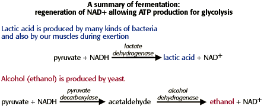

Metabolism Problem SetProblem 1 Tutorial: Glucose conversionGlycolysis leads to the production of ____________ and two molecules of ATP. In the absence of oxygen, fermentation leads to the production of ______________. Glycolysis plus the citric acid cycle can convert the carbons of glucose to _________ , storing the energy as ATP, _____________ and ___________. Products of glycolysisIn glycolysis, glucose with six carbons is converted into two molecules of pyruvate, each with three carbons. In the summary of glycolysis below, glucose converts to two molecules of pyruvate,yielding 2 ATP and 2 NADH. Products of fermentationIn fermentation, pyruvate is decarboxylated to acetaldehyde, and acetaldehyde is reduced by NAD+ producing lactic acid. Fermentation occurs in the absence of oxygen, and is designed to regenerate NAD+ to allow glycolysis to continue. Note that you can't use NADH for energy unless oxygen is present. Products of glycolysis + the citric acid cycleGlycolysis produces two molecules of pyruvate for each molecule of glucose. In in the presence of oxygen (aerobic), the pyruvate enters the mitochondria and is metabolized to CO2 and H2O in the citric acid cycle. A combination of glycolysis and the citric acid cycle oxidizes glucose to CO2 producing ATP and the reduced electron carriers NADH and FADH2. The reaction below summarizes the actions of glycolysis and the citric acid cycle. |